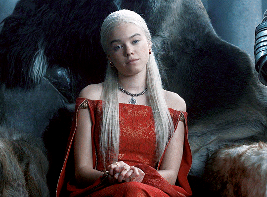
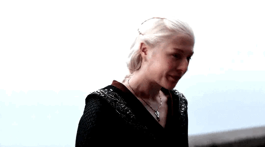

RHAENYRA TARGARYEN

"Quando eu for rainha, eu vou criar uma nova ordem." ― Princesa Rhaenyra Targaryen
Zeus é o rei dos deuses e governante do Monte Olimpo, o panteão celestial da mitologia grega. É associado ao trovão e ao relâmpago, sendo frequentemente retratado segurando um raio em suas mãos. Essa associação com o trovão reflete seu papel como deus do céu e do clima. O deus soberano é frequentemente retratado como um ser poderoso e imponente, com longos cabelos e barba. Também é conhecido por seu papel como senhor dos mortais, sendo protetor de reis e heróis. Em muitas ocasiões interveio nos assuntos humanos. Sua imagem está ligada a ideias de justiça, ordem e liderança. Na mitologia romana, Zeus é conhecido como Júpiter.
Rhaenyra, O deleite do reino

Princesa Rhaenyra Targaryen, conhecida na juventude como Deleite do Reino, era a filha mais velha do Rei Viserys I Targaryen com a Rainha Aemma Arryn. Rhaenyra foi declarada a herdeira de seu pai, mas quando sua mãe faleceu, ele se casou com a Rainha Alicent Hightower, com quem teve um filho masculino. As leis de sucessão de Westeros favoreciam o herdeiro masculino, e Rhaenyra foi deixada de lado por Alicent e pelo Pequeno Conselho quando Viserys I veio a falecer. Mimada desde cedo, Rhaenyra era considerada muito bonita em sua juventude, sendo declarada por seu tio, o príncipe Daemon Targaryen, como a donzela mais bela dos Sete Reinos. Era orgulhosa e teimosa, e notava-se petulância em sua boca. Uma típica Targaryen, tinha cabelos loiro-platinados, normalmente presos numa longa trança, como sua antepassada, a Rainha Visenya, embora Rhaenyra não fosse guerreira.[6] Sempre se vestia ricamente, favorecendo veludos roxos e marrons e rendas de Myr douradas em intrincados padrões. Seus corpetes brilhavam com pérolas e diamantes e sempre havia anéis em seus dedos. Quando estava ansiosa, ela tinha mania de rodar os anéis nos dedos. Embora Rhaenyra soubesse ser encantadora, ela se enfurecia rapidamente e nunca se esquecia de uma afronta. Durante a Dança dos Dragões, usava a coroa de seu pai.
JUVENTUDE
 Nascida em 97 d.C., Rhaenyra era a filha mais velha e primogênita do rei Viserys I Targaryen e sua primeira esposa, a senhora Aemma da Casa Arryn. Rhaenyra tinha dois irmãos que morreram quando ainda eram bebês, fazendo dela a filha única do primeiro casamento do pai. Rhaenyra se tornou uma cavaleira de dragão aos sete anos, quando ela voou pela primeira vez nas costas do seu jovem dragão, que ela nomeou Syrax. Um ano mais tarde, quando tinha oito anos de idade, Rhaenyra se tornou uma copeira para o seu pai, servido ele em sua mesa, em torneios ou na corte. Desse ponto em diante, o Rei Viserys raramente era visto sem Rhaenyra. Desde jovem, Rhaenyra tinha sentimentos fortes por seu tio, o príncipe Daemon Targaryen. Ele trazia para ela presentes exóticos das suas viagens além do Mar Estreito. Durante o torneio pela ascensão do Rei Viserys I, Sor Criston Cole venceu as justas ao desmontar Daemon. O cavaleiro concedeu o louro do vencedor à Rhaenyra e pediu à menina de sete anos seu favor nas arenas de justas. Rhaenyra acabou ficando apaixonada por Sor Criston quando ele se juntou a Guarda Real em 105 d.C., o chamando de "meu cavaleiro branco", e o rei Viserys permitiu que ele se tornasse o escudo juramentado de Rhaenyra. Deste momento em diante, Cole sempre carregava o favor de Rhaenyra nas arenas de justas e protegia a garota em eventos públicos.
Nascida em 97 d.C., Rhaenyra era a filha mais velha e primogênita do rei Viserys I Targaryen e sua primeira esposa, a senhora Aemma da Casa Arryn. Rhaenyra tinha dois irmãos que morreram quando ainda eram bebês, fazendo dela a filha única do primeiro casamento do pai. Rhaenyra se tornou uma cavaleira de dragão aos sete anos, quando ela voou pela primeira vez nas costas do seu jovem dragão, que ela nomeou Syrax. Um ano mais tarde, quando tinha oito anos de idade, Rhaenyra se tornou uma copeira para o seu pai, servido ele em sua mesa, em torneios ou na corte. Desse ponto em diante, o Rei Viserys raramente era visto sem Rhaenyra. Desde jovem, Rhaenyra tinha sentimentos fortes por seu tio, o príncipe Daemon Targaryen. Ele trazia para ela presentes exóticos das suas viagens além do Mar Estreito. Durante o torneio pela ascensão do Rei Viserys I, Sor Criston Cole venceu as justas ao desmontar Daemon. O cavaleiro concedeu o louro do vencedor à Rhaenyra e pediu à menina de sete anos seu favor nas arenas de justas. Rhaenyra acabou ficando apaixonada por Sor Criston quando ele se juntou a Guarda Real em 105 d.C., o chamando de "meu cavaleiro branco", e o rei Viserys permitiu que ele se tornasse o escudo juramentado de Rhaenyra. Deste momento em diante, Cole sempre carregava o favor de Rhaenyra nas arenas de justas e protegia a garota em eventos públicos.
APARÊNCIA

Rhaenyra tinha as características valirianas dos Targaryen, com olhos verdes claros e cabelos prateados. Quando jovem, Rhaenyra era magra e esbelta, muitas vezes usava cabelos longos e soltos. Ele usava roupas finas e chamativas, quase sempre em cores vivas. Quando adulta, Rhaenyra era de constituição mais robusta e costumava usar o cabelo preso em tranças. Suas roupas nessa época eram de veludo e sedas vermelhas e pretas, o que acabaria levando a nomeação da sua facção de seguidores, os Pretos.
Página Anterior
Próxima Página